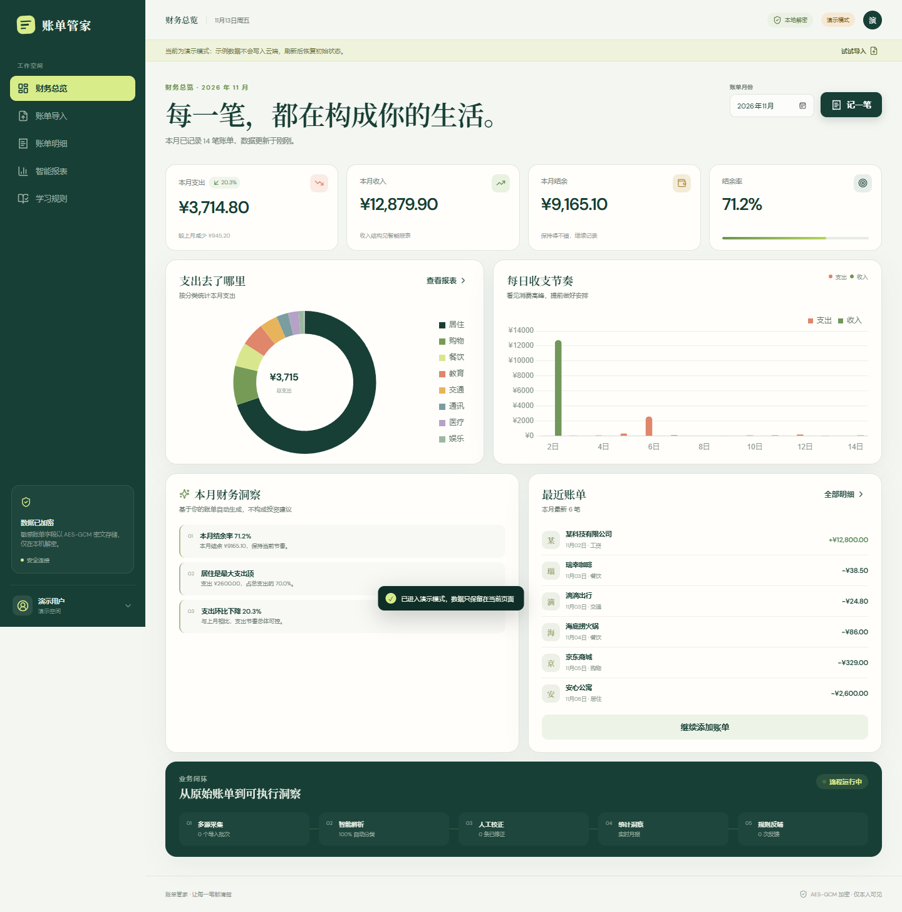
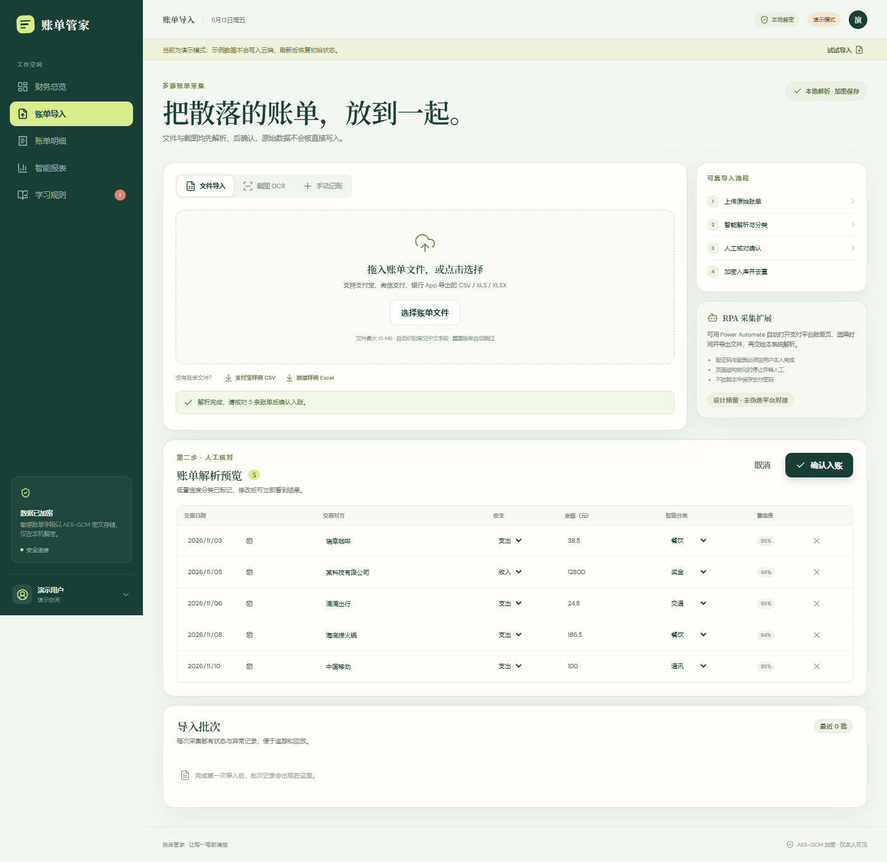
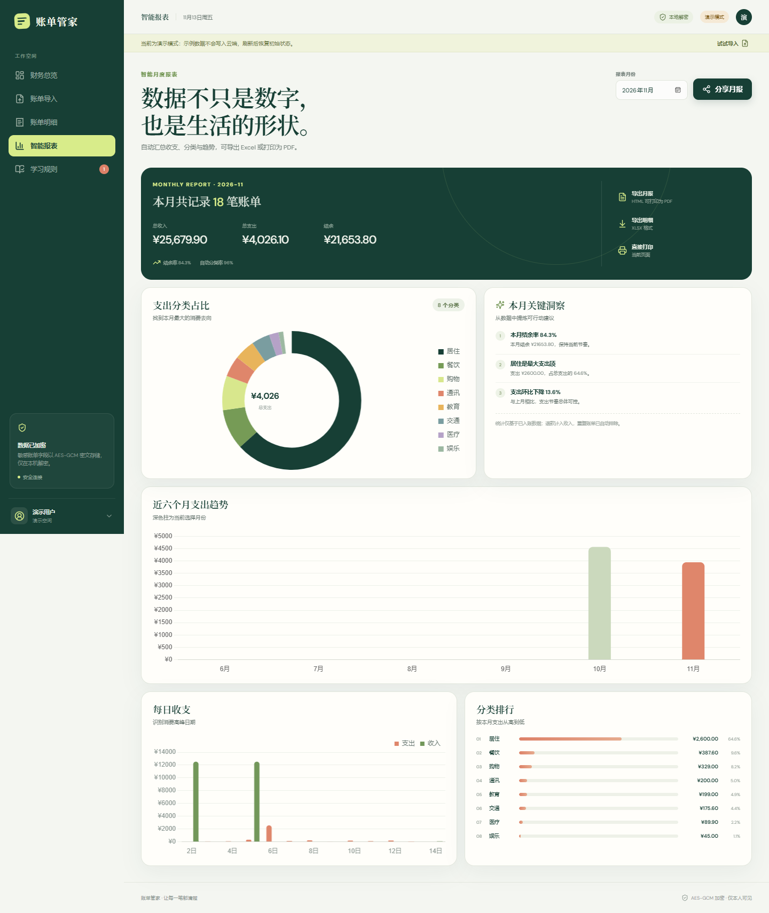
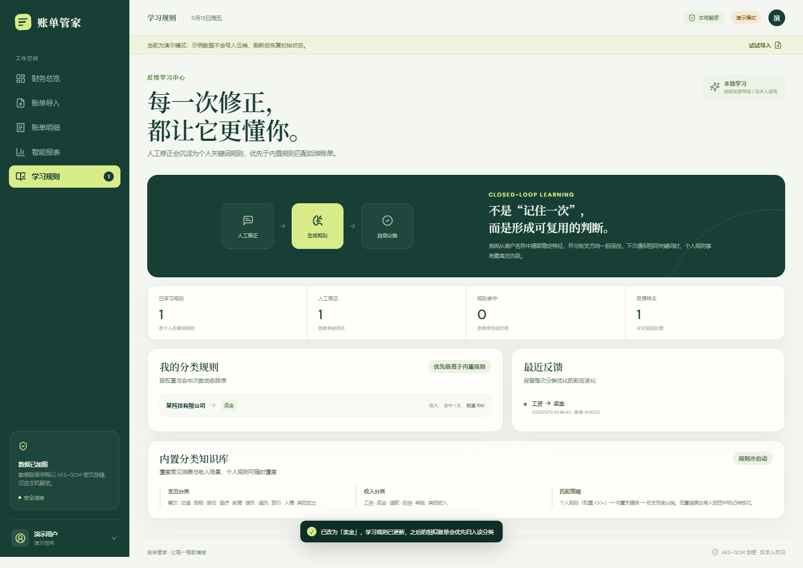
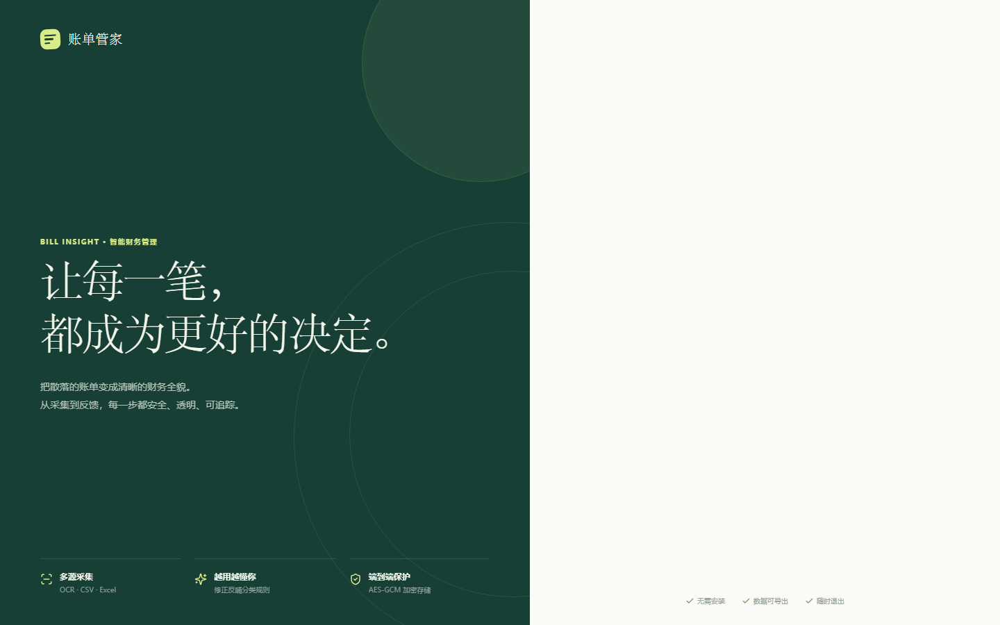

账单管家面向个人账单“来源分散、格式混乱、隐私敏感、统计低效”的问题，把支付宝 / 微信 / 银行导出的 CSV、Excel 以及支付截图，统一解析为结构化账单，自动分类并允许人工修正；修正结果沉淀为个人关键词规则，反哺后续导入。系统提供月度收支、分类构成、每日节奏、近六月趋势与自动洞察，支持 Excel / HTML 报表导出与分享。
作品不依赖支付平台私有接口、不依赖付费 OCR，图片不出浏览器；除云端模式外，提供无需账号、可离线、可 Docker 独立部署的本地加密模式，保证比赛纯净服务器上仍能完整跑通闭环。
| 赛题 B 功能要求 | 本作品实现 | 状态 |
|---|---|---|
| 截图 OCR 提取金额、时间、交易类型 | 浏览器内 Tesseract.js + 本地 chi_sim 模型，支持“支付详情”与“账单列表”两种版式；列表逐行识别并过滤汇总行 | 已实现 |
| CSV / Excel 上传与解析 | SheetJS 解析 CSV/XLS/XLSX，自动定位表头、中文字段别名、UTF-8 与 GB18030 兼容 | 已实现 |
| 自动分类，支持手动调整 | 11 类支出 / 6 类收入内置规则，输出置信度；明细页直接改分类并即时反哺 | 已实现 |
| 按月报表，含饼图、柱状图、收入构成与支出趋势 | 分类环图（支出 / 收入可切换）、每日收支柱图、近六月支出趋势、月报导出 | 已实现 |
| 按时间、类别查询，数据加密存储 | 月份 / 全部时间、收支方向、分类、关键词四维筛选；AES-256-GCM 字段级加密 | 已实现 |
| 闭环：修正反馈优化分类 | 修正生成个人规则（权重 100、命中计数），下次导入优先命中，并记录反馈事件 | 已实现 |
| API 直连账单（可选加分项） | 未接入（个人账单无开放接口）；保留 RPA / API 扩展说明，不声称已实现 | 未做 |
闭环可追踪：每次导入生成批次（总数 / 成功 / 异常 / 重复），每条账单保留分类来源（自动 / 规则 / 人工）与置信度，每次修正写入反馈事件，个人规则带权重与命中次数。异常处理遵循“不静默成功”原则：非法日期、空金额、重复账单都单独计数并提示，OCR 结果只进入可编辑预览，不直接入账。
| 层 | 技术 | 选择理由 |
|---|---|---|
| 前端 | React 19 + TypeScript + Vite | 组件化、严格类型检查、构建快，页面按需加载 |
| 解析 / 表格 | SheetJS 0.20.3 | 一套代码处理 CSV、XLS、XLSX，浏览器端运行 |
| OCR | Tesseract.js 6 + 本地 chi_sim | 图片不出浏览器，无付费接口，离线可用 |
| 加密 | PBKDF2-SHA256 + AES-256-GCM | 浏览器原生认证加密，密钥不离开客户端 |
| 服务 / 部署 | Node HTTP + 多阶段 Docker | 同源提供页面、保存接口与健康检查，命名卷持久化 |
上传后先扫描前若干行，寻找同时包含日期与金额的表头，再按别名匹配商户、收支、备注列；金额兼容千分位、货币符号与括号负数；日期兼容 2026-11-03、2026/11/03、2026年11月3日 与 Excel 序列。非法日期（如 2 月 30 日）直接拒绝，不静默滚动到 3 月；不可识别行记录行号但不阻塞其他有效行。
图片在浏览器内灰度增强、二值化后交给本地模型识别；针对微信账单列表使用单块排版逐行解析，金额带正负号关联日期，自动过滤“支出 / 收入合计”汇总行；单笔支付详情优先识别“实付金额”，出现“查看退款详情”时不误判为收入。识别失败返回可操作错误，不返回空成功。
分类顺序为：个人规则（按权重、关键词长度、命中次数排序）→ 内置关键词规则（置信度 0.72–0.95）→ 收支兜底（置信度 0.3，标记“待核对”）。用户在明细页修改分类后，系统清洗商户噪声词（扫码支付、快捷支付、订单等），提取稳定关键词生成个人规则；重复修改同一关键词时权重与命中次数递增，并写入反馈事件用于审计。
月度总收入 / 总支出 / 结余 / 结余率，分类构成环图（支出与收入可切换）、每日收支柱图、近六月支出趋势、自动洞察（结余率、最大支出项、环比变化），支持 Excel 明细、可打印 HTML 月报与摘要分享（分享内容不含商户与明细）。
| 方法 | 路径 / 函数 | 入参 | 返回 | 错误 |
|---|---|---|---|---|
| GET | /api/vault | 可选头 X-Vault-Token | {settings, payload}，payload 为 {iv, data} | 401 令牌缺失或错误 |
| PUT | /api/vault | JSON 的 settings / payload | {saved: true} | 415 非 JSON；400 非法；413 超 10 MB；401 |
| GET | /health | 无 | ok | — |
| — | BillStore.load() | 无 | {transactions, rules, batches, feedback} | 解密失败抛出 |
| — | saveDrafts(drafts, batch) | 草稿、批次元信息 | {saved, duplicates} | 重复计入 duplicates |
| — | correctCategory(tx, category) | 账单、目标分类 | 更新后的规则列表 | 草稿无 id 不反馈 |
| — | deleteTransaction(id) | 账单 id | 无 | 需前端二次确认 |
云端模式通过 WorkBuddy Cloud SDK 访问托管数据库，不额外暴露 REST 接口；所有查询按 owner_id = auth.uid() 行级隔离。
| 表 | 关键字段 | 约束与用途 |
|---|---|---|
| transactions | occurred_on, month, direction, category, original_category, category_source, confidence, payload_iv, payload_data, fingerprint, corrected, batch_id | 正式账单；敏感载荷加密；月度统计与明细 |
| category_rules | keyword_iv, keyword_data, category, direction, weight, hit_count | 个人学习规则；按权重排序优先命中 |
| import_batches | source, file_name, status, total_count, success_count, failed_count, error_summary | 导入批次追踪与异常回放 |
| feedback_events | transaction_id, old_category, new_category, created_at | 分类修正审计 |
| user_settings | salt, verifier_iv, verifier_data, owner_id | 加密盐与口令校验 |
关键约束：(owner_id, fingerprint) 唯一，重复导入使用 upsert + ignoreDuplicates；month 建索引支撑月度报表；所有业务表启用 RLS，策略为 owner_id = auth.uid()，插入时 owner 由数据库默认值填充，更新同时使用 USING 与 WITH CHECK。本地模式复用同一数据结构，整体加密后写入 data/vault.json 的 payload 字段。
全部能力基于成熟 Web 标准与稳定开源库：文件解析、OCR、加密、图表均在浏览器侧完成，无需自建 OCR 集群或 GPU；服务端只负责静态资源与密文落盘。当前已通过 TypeScript 严格模式构建、15 项单元测试、真实浏览器端到端验收（导入、OCR、修正反哺、跨端口解锁、密文校验）。
数据来源为参赛者本人支付宝 / 微信 / 银行 App 导出的 CSV、XLSX 文件与手机账单截图，均为用户可自行获取的合法数据，无需平台开放 API、无需第三方授权；仓库内置演示账单与样例截图用于复现。敏感数据只在本机加密保存，不上传任何第三方服务。
| 阶段 | 主要工作 | 状态 |
|---|---|---|
| 11-13 | 仓库与基线提交、收入构成图、接口访问令牌、量化验证、OCR 消融实验与优化、精简文档初稿 | 已完成 |
| 11-17 → 11-19 | 容器化实测（镜像构建、健康检查、卷持久化、令牌鉴权）、文档定稿 | 已完成 |
| 11-20 | 材料自查与提交 | 待办 |
| 11-21 → 12-20 | 补真实样本、演示视频（5–8 分钟）、答辩材料 | 计划 |
| 难点 | 预案 |
|---|---|
| 不同平台账单版式差异大，OCR 版式漂移 | 只承诺“支付详情 + 列表”两类已验证版式；识别结果必须人工确认；后续以版式模板扩展，失败转手动录入 |
| 金额等关键字段误识别 | 金额单独校验与高亮提示；允许逐字段编辑；实测金额误识别已在验证章节如实披露 |
| 比赛纯净服务器无 WorkBuddy 云服务 | 默认使用本地模式，Docker 内零外部依赖运行；云端模式仅作为可选能力，不影响主流程 |
| 口令丢失导致数据不可恢复 | 首次设置强提示；保留 vault.json.bak；文档说明备份方式，不做“可找回”承诺 |
| 验证项 | 方法 | 结果 |
|---|---|---|
| OCR 字符级 | 样例支付详情经浏览器同款预处理（灰度+二值化），与人工转录全文做编辑距离比对 | CER 1.1%，准确率 98.9%；单张 485 ms |
| OCR 字段级 | 日期 / 方向 / 金额 / 商户 / 分类逐字段核对 | 5/5 正确（优化前金额误识别 186.50→186.20，经消融实验定位后修复） |
| 分类命中 | 18 条标注账单，调用真实分类入口 | 命中率 94.4%，一致率 94.4%；未命中项以 0.3 置信度暴露 |
| 反馈反哺 | 3 条冷启动商户，修正后生成个人规则再分类 | 一致率 66.7% → 100% |
复现命令 npx vite-node scripts/measure-metrics.ts；完整数据、消融实验与边界说明见 docs/初步验证数据.md。优化前金额误识别（186.50→186.20）经 16 组消融实验定位为预处理滤镜与快速模型问题，更换 best 模型并对齐预处理算法后修复——误差的发现、披露与修复过程全部可复现。

财务总览：本月收支、结余率与支出分类构成
导入预览：逐条置信度、可编辑入账
智能月报：分类构成、趋势与导出
学习规则：修正沉淀的规则与命中记录多阶段构建先在 Node 22 完成类型检查与生产构建，运行阶段由 server.mjs 同源提供页面、密文保存接口与健康检查；账单密文持久化到命名卷 bill_insight_data，容器重建不丢数据；默认本地模式不依赖数据库、外网 API 或云账号。备份：docker cp bill-insight:/app/data/vault.json ./vault-backup.json。
实测结果（2026-11-19，Docker Engine 29.9.3 + 容器内 Node 22）：docker compose build 成功；镜像 293 MB；up -d 后约 16 秒容器进入 healthy；/health 返回 ok、首页与 OCR 模型均 200；命名卷写入文件后重启容器仍可读回（持久化生效）；容器内设置 VAULT_TOKEN 后接口鉴权为 无令牌 401 / 正确令牌 200 / 错误令牌 401。
源码仓库（含完整提交历史）：https://github.com/ljw9191/bill-insight 。分支 main 共 8 次提交，覆盖基线、收入构成、接口鉴权、量化验证、OCR 优化、精简文档与容器实测；仓库不含真实账单密文（data/ 已忽略）。

容器内运行的服务：http://localhost:8080 页面由容器同源提供| 项目 | 说明 |
|---|---|
| 使用服务 | Tesseract.js 6（开源 OCR 引擎）+ 项目内置 chi_sim 简体中文 best 模型（12.5 MB） |
| 调用位置 | src/lib/parser.ts → recognizeScreenshot()，在 Web Worker 中本地推理；分类调用 src/lib/classifier.ts → classifyBill() |
| 调用方式 | 纯本地推理，无 API Key、无网络请求、图片不上传；模型随应用发布，首次使用无需下载 |
| 失败兜底 | 识别失败或结果为空时返回可操作错误，用户可改用手动录入或文件导入；低置信度分类显式标记“待核对” |
| 边界说明 | 分类器是可解释关键词规则 + 个人反馈规则，不使用大模型，不宣称“AI 自动记账”；如后续接入大模型，仅用于分类兜底与洞察生成，并保留人工确认 |
| 时间 | 任务 | 产出 |
|---|---|---|
| 11-21 → 11-30 | 补充真实账单样本（≥30 张截图 / ≥200 条流水），重跑准确率统计 | 更新的验证数据与误差分析 |
| 12-01 → 12-10 | 性能与安全加固、RPA 扩展设计、部署包整理 | 压测记录、独立部署包 |
| 12-11 → 12-19 | 录制 5–8 分钟闭环演示视频、答辩材料 | 演示视频、答辩 PPT |